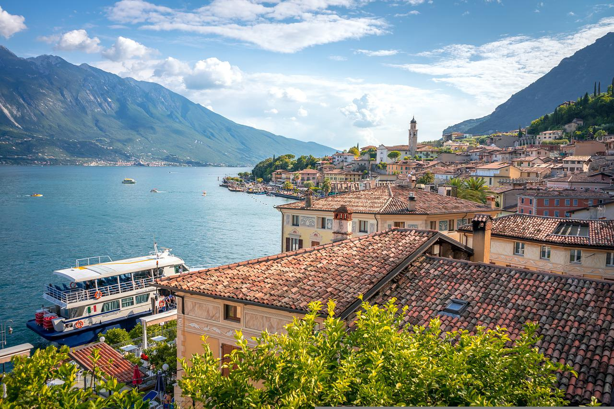
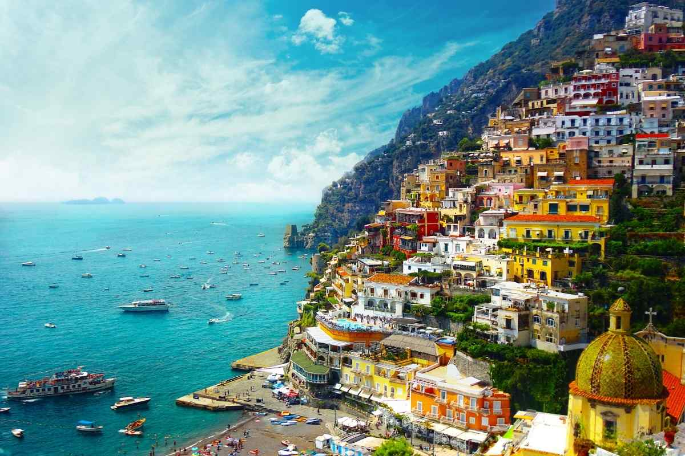

 Lake Garda in Northern Italy
Northern Italy is known for creamy risottos, stuffed pastas, cured meats, and rich cheeses like Parmigiano-Reggiano. Don’t miss a visit to the hilltop town of Orvieto

 Positano on the Amalfi Coast
Southern Italy is famous for its sun-ripened tomatoes, fresh seafood, olive oil-rich dishes, and beloved classics like Neapolitan pizza and mozzarella di bufala

.jpg) City of Florence
City of Florence Central Italy is celebrated for its rustic stews, handmade pastas, truffles, and iconic wines from regions like Tuscany and Umbria